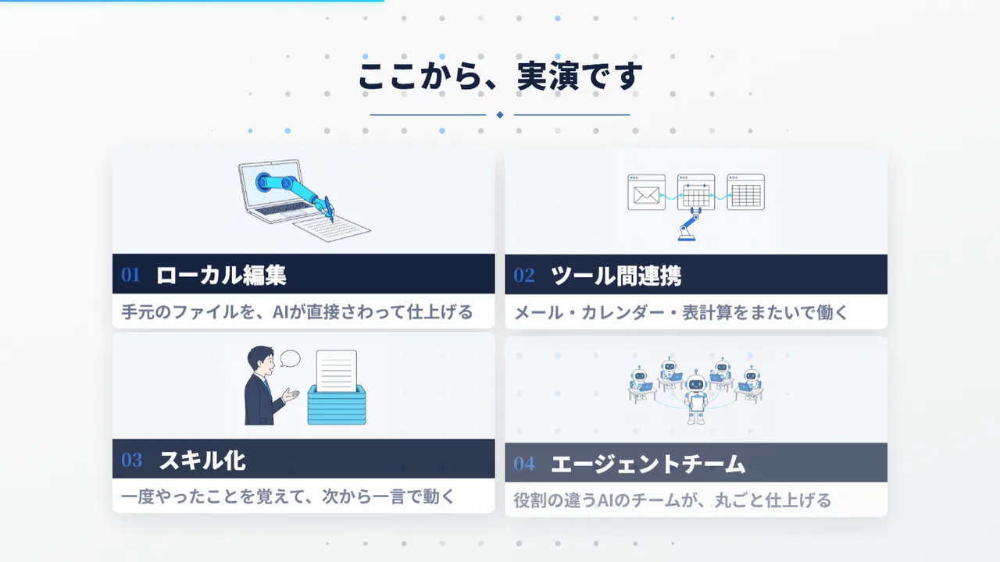
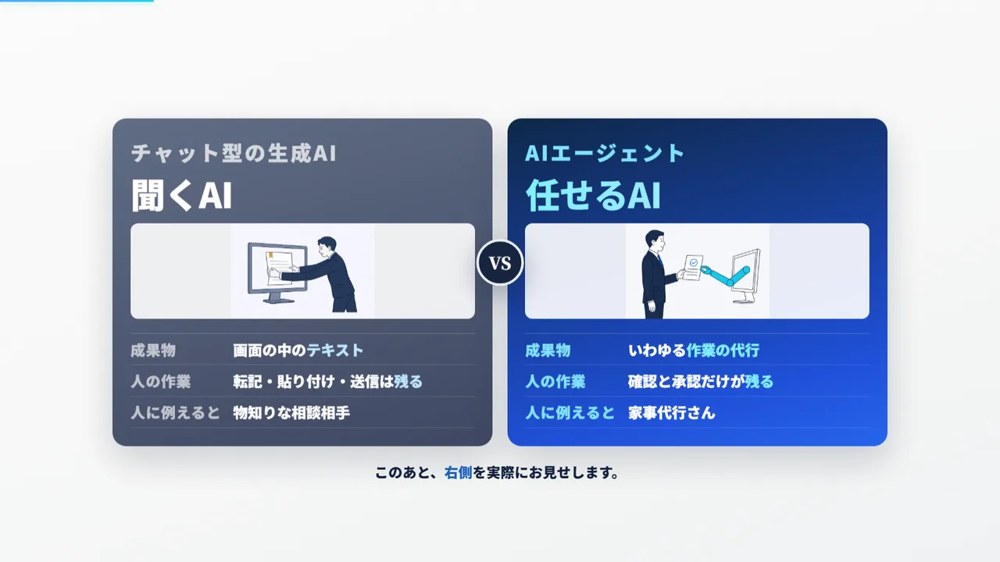
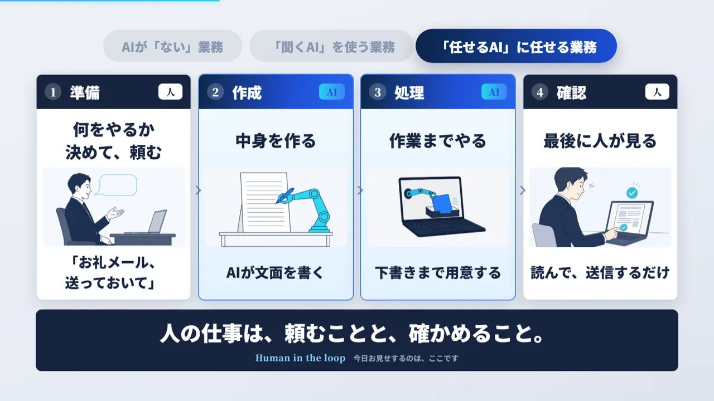
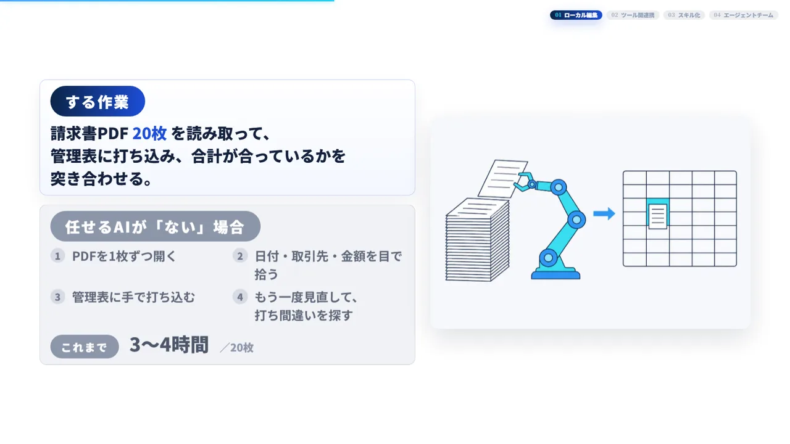
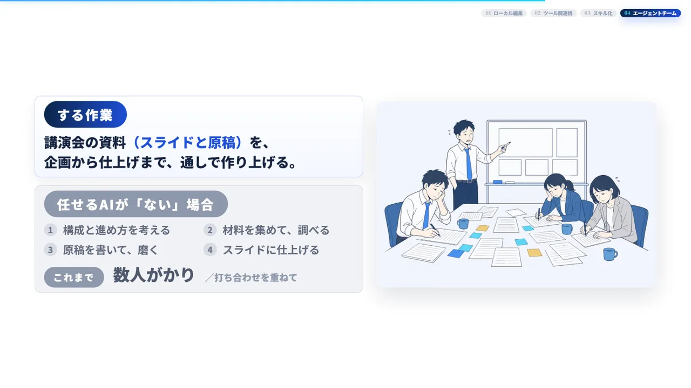
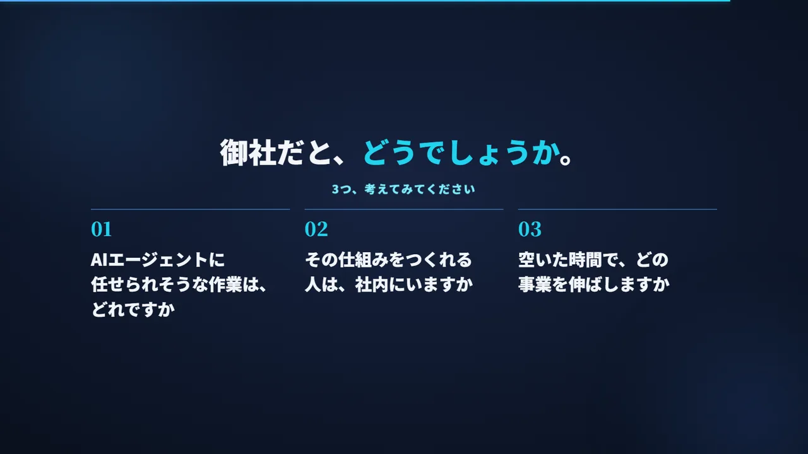

福井の経営者向けAIエージェント実演セミナー（2026年9月）

「AIは試してみたけれど、仕事のやり方は変わっていない」。福井の経営者から、よく聞く声です。2026年9月、福井市のFWI Studioで、AIエージェントが実際に仕事を進める様子を見ていただくセミナーを開きました。90分で4つの実演を見た参加者の反応と、その後の動きをまとめます。
PROFILE福井の会社の経営者・AI担当者
- 実施日
- 2026年9月14日（月）16:00〜17:30
- 会場
- FWI Studio（福井市中央1丁目）
- 対象
- 経営者・役員、社内でAI活用を任されている担当者
- 主催
- 合同会社BWH総合研究所
- 形式
- 講演と実演（90分）
この事例のポイント経営者と社内のAI担当者に、AIエージェントが実務を進める様子を4本の実演で見ていただきました。多くの参加者が「まず話を聞いてみたい」と答え、複数の会社と個別の面談に進んでいます。
01なぜ、このセミナーを開いたか
生成AIのアカウントを作った会社は、福井でも増えています。一方で、毎日の仕事の進め方まで変わった会社は、まだ多くありません。説明を聞くだけでは、自社の仕事に置き換えた姿が浮かびにくいからです。
そこで、話を聞くだけの場ではなく、AIエージェントが実際の作業を進める様子を目の前で見ていただく場として企画しました。テーマは「AIに、作業を。人に、事業を。」です。

02「聞くAI」と「任せるAI」の違い
最初に、チャット型の生成AIとAIエージェントの違いをお話ししました。チャット型のAIは、聞けば答えを返してくれます。ただ、その答えを資料に写す、メールに貼る、送るといった作業は、人の手に残ります。
AIエージェントは、ファイルを開く、表に書き込む、下書きを保存するといった作業まで進めます。人が受け持つのは、何を頼むかを決めることと、最後に確かめることです。

03仕事の流れは、どう変わるか
仕事を「準備・作成・処理・確認」の4つの工程に分けると、違いが見えやすくなります。AIがない業務では、4つの工程すべてに人の時間がかかります。聞くAIを使うと、文章を作る工程は速くなりますが、手を動かすのはまだ人です。
任せるAIでは、作成と処理をAIが受け持ちます。人は、最初に何をやるかを決めて頼み、最後に読んで確かめて送るだけになります。

04当日の内容：4つの実演
実演は、実際の操作画面を流しながら、1本ずつ説明しました。それぞれ、AIがない場合に人がしている手順と、かかっている時間の想定を並べて見ていただきました。
- 1. 手元のファイルを、AIが直接さわる：請求書のPDF20枚を読み取り、管理表に打ち込み、合計が合っているかを突き合わせます。手作業なら3〜4時間かかる想定の作業です。
- 2. メールと予定表をまたいで動く：問い合わせのメールを読み、予定表の空きを確かめて、日程を提案する返信の下書きを作ります。手作業なら1件15分かかる想定です。
- 3. 一度やったことを覚えさせる：1回目は手順を全部書いて頼み、2回目からは保存した手順（スキル）の名前を呼ぶだけで同じ作業を進めます。説明のたびにかかっていた20分がなくなります。
- 4. 役割の違うAIのチームに任せる：講演会の資料（スライドと原稿）を、企画、調べもの、文章、スライドの係に分かれたAIが分担して仕上げます。これまで数人がかりだった作業です。
05実演1：請求書20枚の転記
1つ目の実演では、フォルダに入った請求書のPDFをAIが1枚ずつ開き、日付、取引先、金額を読み取って管理表に打ち込みました。最後に、合計が合っているかもAIが確かめます。
人がするのは、最初に「このフォルダの請求書を管理表にまとめて」と頼むことと、できた表を見て確かめることです。

06実演4：AIのチームで、講演会の資料を作る
4つ目の実演では、全体を指揮するAIが、企画、調べもの、文章、スライドの係に仕事を振り分け、講演会のスライドと原稿を仕上げました。人が決めるのは、講演会の目的と、できあがりの確認です。
これまで数人がかりだった仕事も、係を分けると、それぞれの係が並行して進めます。

07参加者の反応
アンケートでは、多くの参加者が「まず話を聞いてみたい」と答えました。社内でのAIの使い方を尋ねると、「まだ使っていない」から「全社で決めて使っている」まで、会社ごとに大きな差がありました。
自由記述には、自社の業務に引き寄せた声が寄せられました。
スキャンした書類を、見積もりに反映したい。
参加者アンケートより
図面から、面積を出したい。
参加者アンケートより
08その後：複数の会社と個別の面談へ
セミナーのあと、複数の会社と個別の面談に進んでいます。面談では、各社の業務のうち、どこからAIに任せられるかを一緒に整理しています。

09この事例から見えたこと
実演を見ると、参加者の質問が「AIとは何か」から「うちのこの作業はできるか」に変わります。AI よろづやの現場AI研修でも、最初に自社の業務に近い題材で実演を見ていただき、そのうえで受講者が自分の手で動かす順番にしています。
10同じ研修を受けるには
AI よろづやの現場AI研修は、御社の実際の業務を題材に、受講者が自分のPCでAIエージェントを動かす実務研修です。
人数、受講する方の職務、題材にしたい業務を伺ってから、研修の時間と進め方を一緒に決めます。研修のあとに、業務への組み込みを伴走でお手伝いすることもできます。
よくある質問
セミナーと研修は、何が違いますか？
セミナーは、AIエージェントで何ができるかを実演で見ていただく場です。研修では、受講者が自分のPCでAIエージェントを動かし、自社の業務を題材に手を動かします。
PCに詳しくない社員でも受けられますか？
受けられます。事前にセットアップの手順書をお送りし、当日は最初の時間で、全員のPCでAIエージェントが動く状態にしてから進めます。
研修の時間と人数は、どのくらいですか？
90分のセミナーから、3時間の実習まであります。人数、受講する方の職務、題材にしたい業務を伺ってから決めます。
助成金は使えますか？
提携の社会保険労務士と連携し、人材開発支援助成金などを使えるかどうかを、研修の内容を決める段階から一緒に確かめます。条件は会社の状況によって変わります。
使ったもの
- Claude Code（AIエージェント）
- 請求書PDFの読み取りと管理表への転記
- メール・カレンダーとの連携
- 複数のAIで分担するエージェントチーム
担当したAI社員
 一乗谷 アヤ研修の担当（AI社員）
一乗谷 アヤ研修の担当（AI社員） 九頭竜 ソラAX推進のコンサルタント（AI社員）
九頭竜 ソラAX推進のコンサルタント（AI社員）